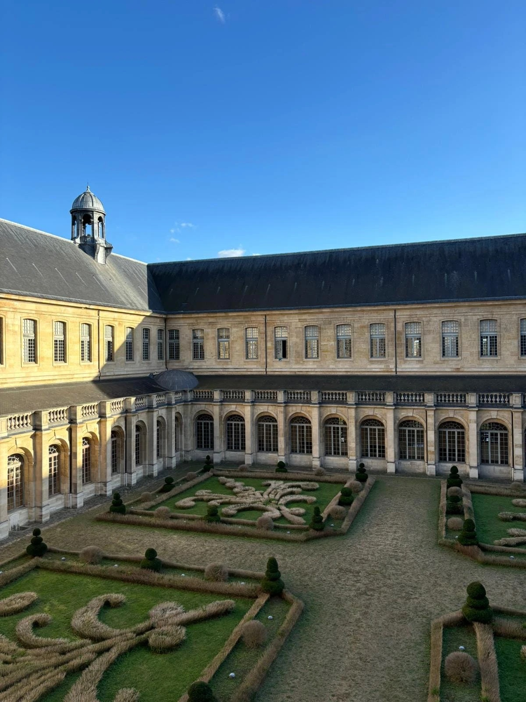
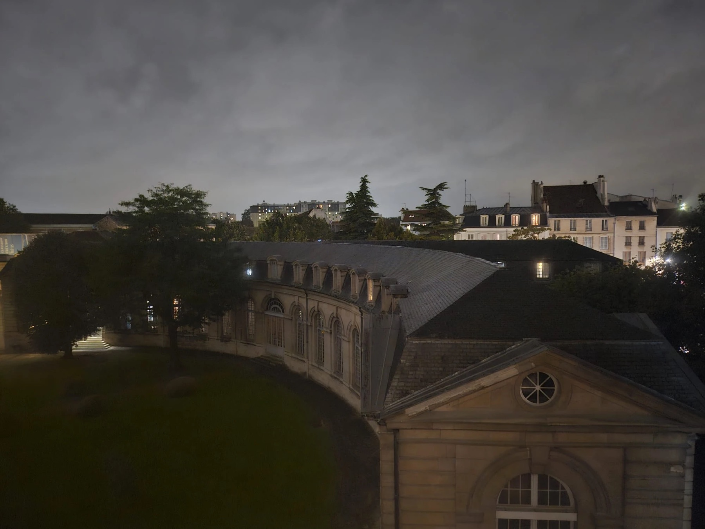
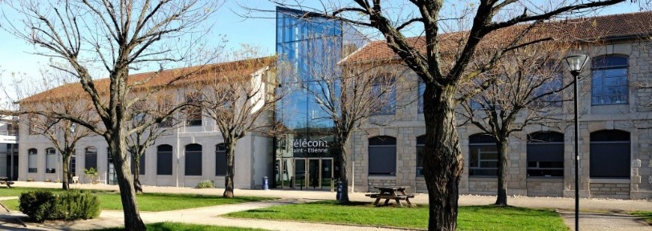

Des mesures fiables
Étalonnages et constats de vérification réalisés en laboratoire de métrologie, avec les fondamentaux de l'évaluation des incertitudes et du VIM.
Télécom Saint-Étienne · BUT Mesures Physiques
Future ingénieure · métrologie, optique, matériaux
Étudiante en deuxième année du double cursus CITISE et BUT Mesures Physiques, je me forme à la métrologie et à l'instrumentation. Rigoureuse, curieuse et créative, j'aime autant comprendre un phénomène que le rendre clair pour les autres.
Recherche un stage de 11 semaines à partir du 12 avril 2027
Métrologie · Physico-chimie · Optique · Matériaux
Je développe à Télécom Saint-Étienne des compétences en ingénierie des systèmes, en analyse de données et en instrumentation. Rigoureuse et curieuse, j'aime les environnements techniques exigeants et le travail en équipe. Mon objectif : rejoindre un secteur industriel innovant, contribuer à des projets technologiques à forte valeur ajoutée et continuer à grandir en tant que future ingénieure.
Étalonnages et constats de vérification réalisés en laboratoire de métrologie, avec les fondamentaux de l'évaluation des incertitudes et du VIM.
Des protocoles expérimentaux suivis avec rigueur et des comptes rendus techniques rédigés pour être compris et exploités.
Un niveau bilingue certifié Cambridge, avec le vocabulaire scientifique de l'électricité, de l'électronique, de la chimie et de la physique.


2022 – 2025 · Saint-Denis
Trois années dans un lieu chargé d'histoire, installé dans les bâtiments de l'ancienne abbaye royale de Saint-Denis. J'y obtiens le baccalauréat en section européenne avec la mention Très Bien, et j'y apprends la rigueur, l'autonomie et l'esprit critique face à un problème scientifique.
un lieu qui compte beaucoup pour moi

2025 – 2027 · Saint-Étienne
J'intègre CITISE, la prépa intégrée de Télécom Saint-Étienne, menée en parallèle du BUT Mesures Physiques à l'IUT. Au programme : métrologie, instrumentation, électronique, acquisition et traitement de données sous LabVIEW, travaux pratiques en autonomie comme en équipe, et rédaction de comptes rendus techniques.
Avril 2027 · votre entreprise ?
Un stage de 11 semaines à partir du 12 avril 2027, en métrologie, physico-chimie, optique ou matériaux, à Saint-Étienne, à Lyon, en Île-de-France ou en Auvergne. Ce chapitre-là, j'aimerais l'écrire avec votre équipe.
à suivre…
Conforme ou pas ? Vérifiez vous-même.
En projet de métrologie à l'IUT, j'ai réalisé des étalonnages et des constats de vérification d'instruments de mesure. Voici le raisonnement d'un constat, en version interactive : changez les valeurs, le verdict se met à jour.
Constat de vérification
N° CRD-001
Valeurs d'exemple. Règle de décision qui tient compte de l'incertitude, dans l'esprit de la norme ISO 14253-1 : conforme si |E| + U ≤ EMT, non conforme si |E| − U > EMT, sinon on ne peut pas conclure.
En laboratoire de métrologie, étalonnage d'instruments de mesure et constats de vérification : analyse des résultats, respect des normes qualité et rédaction de rapports techniques.
Développement en équipe d'un jeu vidéo éducatif : logique de jeu et structure du code, game design et expérience utilisateur, résolution de problèmes techniques et gestion de projet.
Étalonnage, constats de vérification, fondamentaux de l'évaluation des incertitudes et du VIM.
À l'aise avec un large panel d'instruments de mesure ; acquisition et traitement de signaux sous LabVIEW.
Conception et analyse de circuits électroniques et électriques.
Interpréter des résultats, exploiter des mesures, vérifier leur cohérence et en tirer des conclusions fiables.
Démarches de test, de mesure et de validation, protocoles rigoureux, comptes rendus techniques.
Comprendre et écrire du code, structurer un programme, automatiser des tâches, traiter des données.
Écrit et oral professionnels, avec le vocabulaire scientifique de l'électricité, de l'électronique, de la chimie et de la physique.
Capable de communiquer aisément dans un cadre professionnel.
Mon temps libre a souvent un crayon à la main. Le dessin m'apprend l'observation, la patience et le sens du détail : trois qualités qui servent aussi au laboratoire.
Plus jeune, j'ai fait du théâtre et j'ai adoré ça. On y apprend à prendre la parole, à écouter les autres et à avancer en troupe.
Contact
Stage de 11 semaines à partir du 12 avril 2027 · Saint-Étienne, Lyon, Île-de-France ou Auvergne.